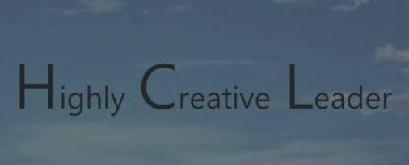

- 소개
- 웹페이지 프로젝트
- 학회참관
- 기업탐방 및 분석
- 네이버카페 바로가기
- 페이스북 바로가기
경상국립대학교 화학공학과 학술동아리 HCL
HCL 동아리에 오신것을 환영합니다
HCL 동아리는 highly Creative Leader의 약자이며 경상대학교 화학공학과 학술 동아리입니다.
저희 동아리는 화학공학에 대한 이해와 관심 증가, 화학공학과 관련된 대외활동, 우수한 창의적 인재 양성을 목표로 활동합니다.
또한 다양한 학년의 학생들의 소통의 장이 되어 선후배간의 긴밀한 통로의 역할을 하는 동아리입니다.
HCL동아리는 화학공학 관련 주제로 발표 및 토론, 멘토-멘티 활동, 한국화학공학회 경진대회 준비, 기업분석 및 기업 탐방,
화학공학과 관련된 기업에서 재직하고 계신분의 초청 멘토링 등 전공과 관련하여 다양한 활동을 하고 있습니다.